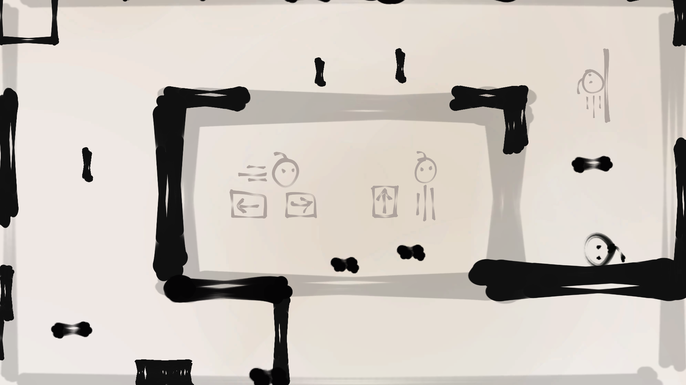
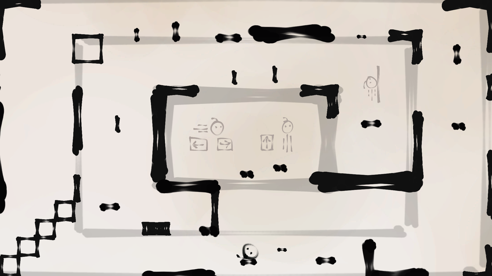
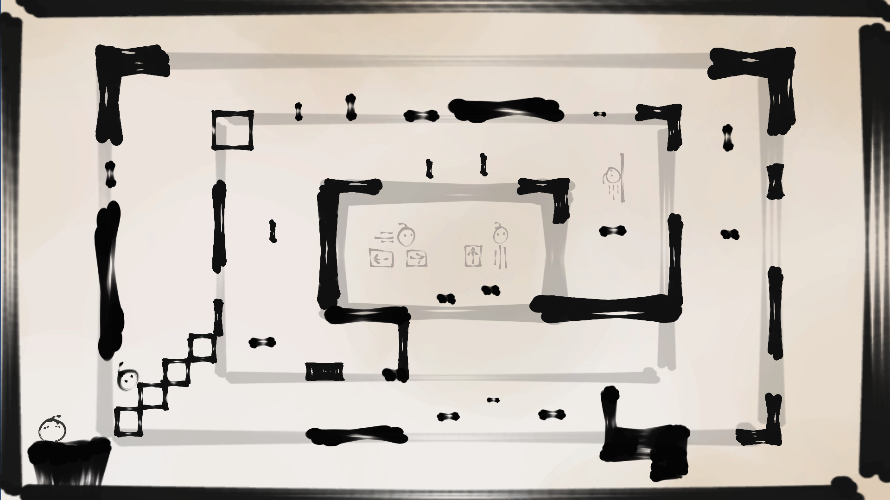
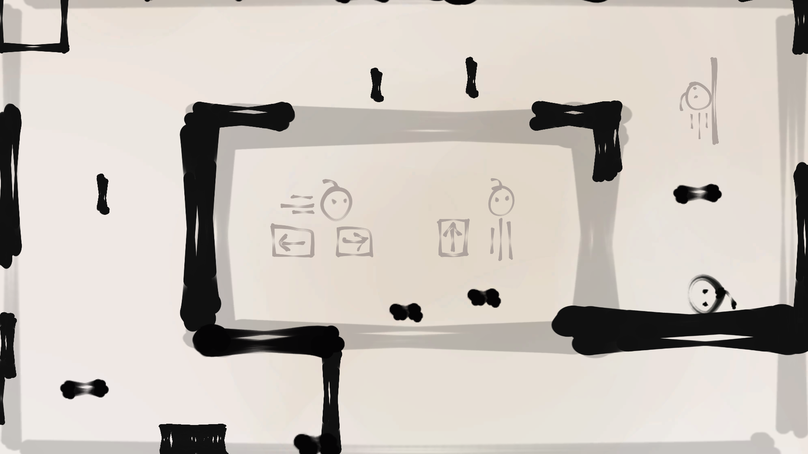
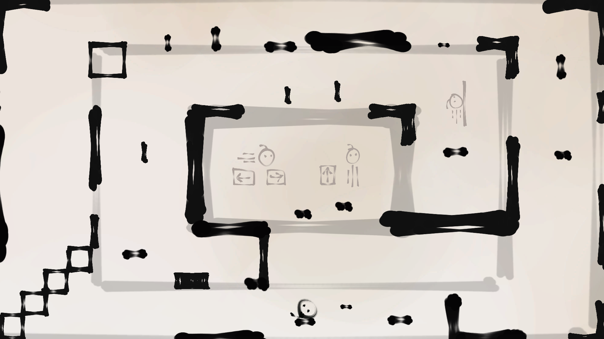
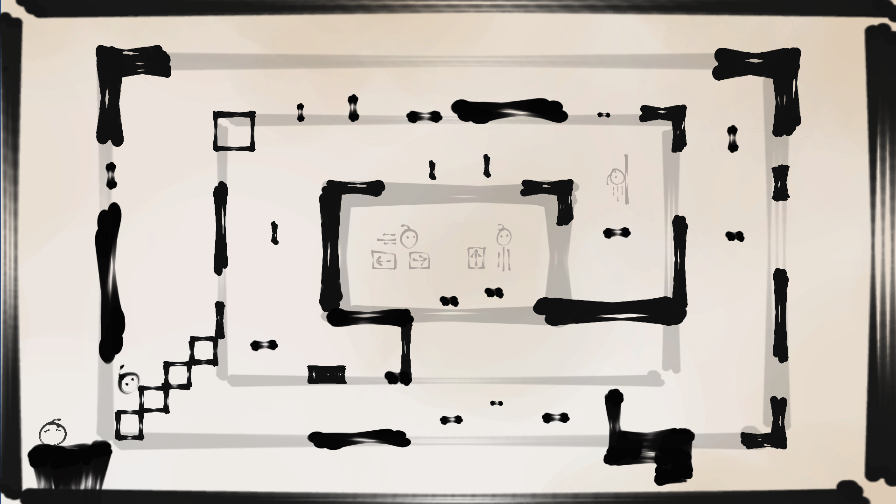
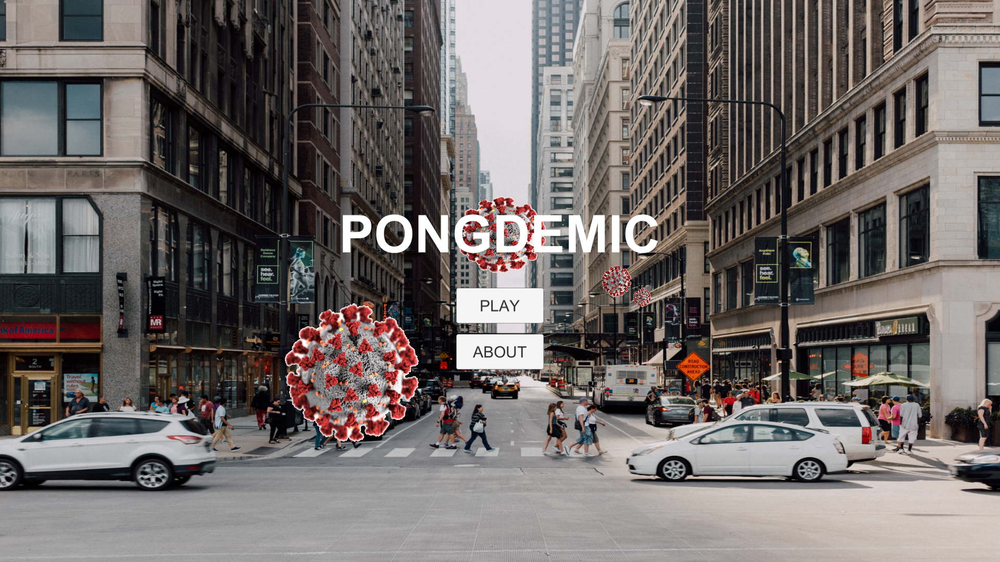

Android App
Below is a demo of an android app that I made as part of a group project during first year. I was in charge of UX design,
writing the report, and editing the demo as shown below.
Game Jam 1
Here's a game I made for Blackthornprod's Game Jam. It's the first game I ever made,
so the controls are janky, but I'm proud of it. Especially since I made all the art and music too :)
 





Background music (made in Bosca Ceoil):
The game jam lasted a week and the theme was 'Less is More'. Using Unity, I built a really simple platformer
where the player controls a little ball guy. As he progresses, the camera pans out to reveal more of the level. The idea
is that, even if you think you're not making much progress, it adds up over time - so, 'Less is More' :)
You can download and play the game here: Less is More
Game Jam 2
Here's a game I made for Brackey's Game Jam. It's my second game and also made in Unity.
Similarly, I drew all the art and composed the music. Had to use Google a lot for the code though, haha...
Background music (made in Bosca Ceoil):
This game jam also lasted a week and the theme was 'Stronger Together'. I came up with the idea that fire grows stronger
when there's more of it, so the player is a little fire dude. He's snowed in, and he has to rescue the other fires to become
stronger and melt the snow outside. It's a simple escape room style game where you solve puzzles to progress.
You can download and play the game here: Stronger Together
Pongdemic
Myself and two others made Pongdemic during a 24 hour hackathon run by the university. It's the basic game of pong...
... but coronavirus pandemic themed. I sourced most of the images and coded the things like the menu. My other teammate coded
the pong mechanics and another found the coughing sound effects.
Yeah, this one was fun :)
Sadie is Angry
I made Sadie is Angry with one other friend. It's a simple platformer about Sadie, a teenager who is angry about the current
system of education. She runs and stomps through classrooms. With each stomp, she activates different platforms that can help her
acquire 'calmness' coins. Hopefully she is less angry by the end.
This one is still in development~
And those are all the significant projects I've worked/ been working on! When I think about it, they were all done this year (2021).
Thanks for reading :)